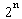
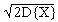
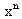

Teorija verovatnoce
april '98.
1. Neka je dat prostor verovatnoca á[0,1], B, lñ, gde je B uobicajena s-algebra, l Lebegova mera na [0,1], i neka je definisana slucajna promenljiva
Xn(w) = [w], w Î [0,1], n ³ 1.
a) Opisati kanonicnu algebru F(Xn);
b) Za proizvoljnu integrabilnu slucajnu promenljivu Y na á[0,1], B, lñ izracunati
E{Y½Xn},
a specijalno za m, n Î N izracunati
E{Xm½Xn}
razmatrajuci slucajeve m < n, m = n i m > n.
2. Neka je X kvadratno integrabilna slucajna promenljiva sa funkcijom raspodele F. Ako je m tacna medijana za raspodelu F, tj. tacka neprekidnosti funkcije F za koju je F(m) = ½ , pokazati da je tada
½E{X} - m½ £ .
3. Neka je {Xn} niz nezavisnih slucajnih promenljivih, tako da Xn ima raspodelu P() raspodelu, 0 < x < 1. Naci verovatnocu P{Xn > 1, beskonacno mnogo puta}.
4. Da li za niz nezavisnih slucajnih promenljivih {Xn} sa raspodelama redom
P{X = - n} = 1 / 2n, P{X = 0} = 1 - 1/n, P{X = n} = 1 / 2n
vazi centralna granicna teorema?